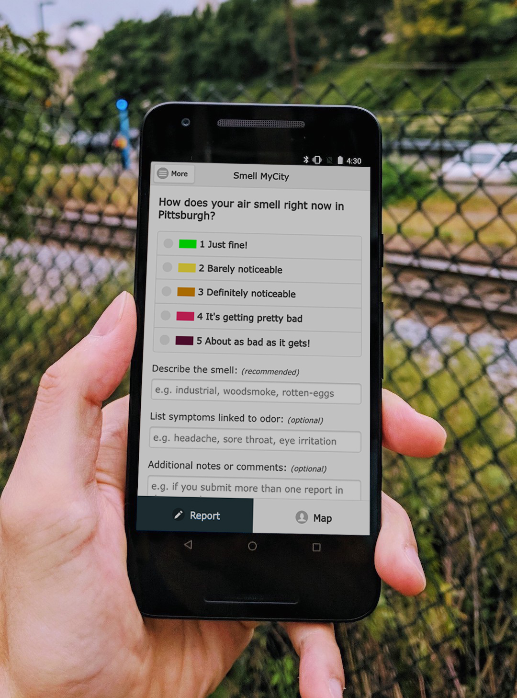
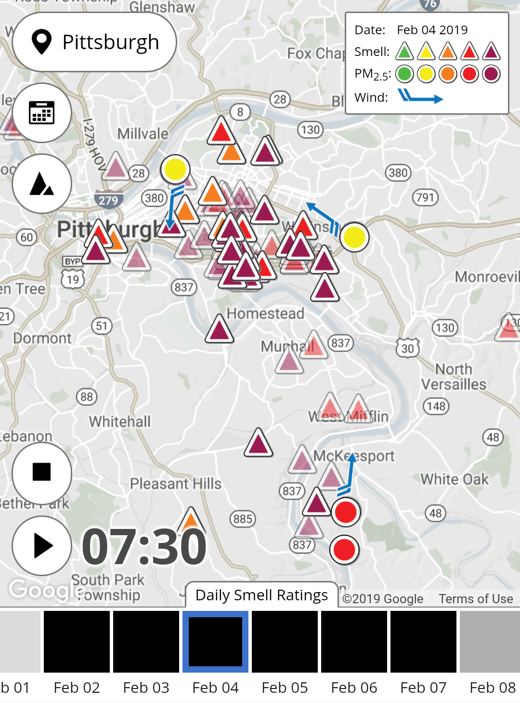

Basic Function
- Submit a smell report:
- Launch the app and pick a rating for the smell you experience (from 1 through 5)
- Add a description of the smell (optional, but highly recommended)
- List any symptoms attributable to the experience (optional)
- Add any notes relevant to your report (optional)
- Hit "Submit Smell Report"
- Please only enter information that you are comfortable with sharing anonymously on the public Smell MyCity map
- Check out the Smell MyCity map:
- Once submitted, all smell reports show up on the public Smell MyCity map
- Smell reports will be represented by triangle icons
- The color of each report's icon will match the given smell rating
- Tapping on a smell report icon will reveal details about that report
- To protect your privacy, the location of each report is shifted slightly on the map
- NO personally identifiable information is shown on the map
- Circle icons represent federal PM2.5 sensors - tap those icons for more info
- If you are in a location where the regulatory agency is connected with the app, they will receive information about your report, including:
- Your name and contact information, if you chose to enter those under "Settings"
- The location of the smell (based on the GPS location of your phone)
- Date, time and rating of the smell report
- Description, symptoms and notes included in the smell report, if any

